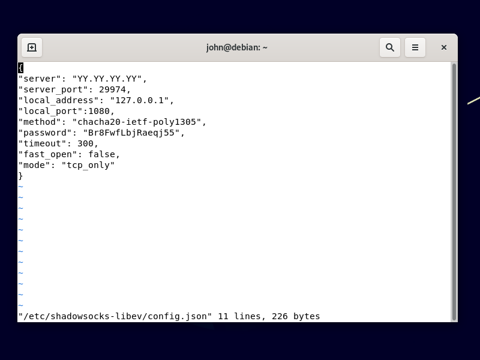

Pre-Proxy + Tor + Post-Proxy
Using a pre-proxy before with Tor provides you with censorship circumvention and improved privacy. However, more and more sites are suspicious of traffic that comes from a Tor exit node. They will force you to complete multiple rounds of “Captchas” (completely automated public Turing tests to tell computers and humans apart), or even impose an outright block. By adding a post-proxy, you can visit these sites from a node that does not appear to be a Tor exit node. The final arrangement of software chains three components:
- a pre-proxy for anticensorship
- Tor for anonymity
- a post-proxy to avoid having a Tor exit node as your final IP address
This article gives some practical details to construct this arrangement.
We assume that your PC runs a recent version of Debian or Ubuntu. We tested this procedure with Debian 11 Buster Release Candidate 2. If your PC runs Windows or macOS, you will have to experiment on your own.
1. Install and Configure Pre-Proxy
1.1. Make Decisions
You will need to make some decisions as to which pre-proxy will work best. Examples of pre-proxies would be Shadowsocks, V2Ray, or Trojan-GFW. We have tested this procedure with Shadowsocks. We have not tested V2Ray or Trojan-GFW.
Having decided that, you will need to decide between using a public-interest server or a private server. Which is best for you depends on your threat model. You do not know who is running the public-interest server, and you do not know if they keep logs. However, your traffic will pass through the first server completely encrypted, so the proxy operator does not know your final destination or the contents of your traffic. A private server is more secure but leaves a money trail.
1.2. Obtain Pre-Proxy Server Details
Having made your decisions, you must obtain the pre-proxy server details such as IP address, port, and password.
- If you decide that a public-interest server will work best for you, you can find servers from lists on the Internet.
- If you decide that a private server will work best for you, you can set one up as described in the articles on Shadowsocks-Libev, V2Ray, and Trojan-GFW.
We give the example of setting up a private Shadowsocks-Libev server at IP address YY.YY.YY.YY:
ssh root@YY.YY.YY.YY
apt update && apt upgrade -y
apt install shadowsocks-libev -y
vi /etc/shadowsocks-libev/config.json
Enter your choice of configuration details. For example:
{
"server":["::1", "0.0.0.0"],
"server_port":29974,
"local_port":1080,
"method":"chacha20-ietf-poly1305",
"password":"Br8FwfLbjRaeqj55",
"timeout":300,
"fast_open": false,
"mode":"tcp_only"
}
Save the file, restart Shadowsocks-Libev, and exit your session with the server:
systemctl restart shadowsocks-libev
exit
1.3. Install and Configure Pre-Proxy Client
Whether you are using a public-interest server or a private server, at this stage you must have the details of your server so that you can configure your client.
This article uses the example of a Shadowsocks server as the pre-proxy. You would install the client on Debian or Ubuntu like this:
sudo apt update && sudo apt upgrade -y
sudo apt install shadowsocks-libev -y
Since this will be a Shadowsocks local client, stop the Shadowsocks server:
sudo systemctl stop shadowsocks-libev
sudo systemctl disable shadowsocks-libev
Edit a configuration file for the client:
sudo vi /etc/shadowsocks-libev/config.json
Enter your server details, replacing YY.YY.YY.YY by your server’s public IP address:
{
"server": "YY.YY.YY.YY",
"server_port": 29974,
"local_address": "127.0.0.1",
"local_port":1080,
"method": "chacha20-ietf-poly1305",
"password": "Br8FwfLbjRaeqj55",
"timeout": 300,
"fast_open": false,
"mode": "tcp_only"
}

Save the file.
Start the local client listening on port 1080:
sudo systemctl enable shadowsocks-libev-local@config
sudo systemctl start shadowsocks-libev-local@config
2. Install and Configure Tor Browser
2.1. Download and Extract Tor Browser
Open Firefox. Download the Tor Browser for 64-bit Linux in your language from the Tor Project website.
If the Tor Project website is blocked in your country, the pre-proxy should allow you to reach it if you configure Firefox to use the SOCKS5 proxy
on 127.0.0.1 port 1080. If you still have problems, send an email to gettor@torproject.org. The
email responder will automatically send you alternative download links for Tor Browser.
The download will have a name such as tor-browser-linux64-10.0.17_en-US.tar.xz. Decompress the archive by opening a terminal and issuing the
commands:
cd ~/Downloads
tar -xf tor-browser-linux64-10.0.17_en-US.tar.xz
Install the app like this:
cd tor-browser_en-US
./start-tor-browser.desktop --register-app
2.2. Configure Tor to Use Pre-Proxy
The Tor configuration file is stored in ~/Downloads/tor-browser_en-US/Browser/TorBrowser/Data/Tor/torrc. However, you should configure Tor within the
Tor Browser graphical user interface.
Assuming you are using GNOME desktop, click Activities. Search for and start Tor Browser. (At this point, you can right-click on the Tor Browser icon in the Activities menu and add it to your favorites, if you wish.)
The first time Tor Browser launches:
- Click Configure.
- Check I use a proxy to connect to the Internet.
- Enter the details of your pre-proxy client, which will usually be proxy type SOCKS5, IP address
127.0.0.1, and port1080. - Click Connect to make sure you can connect through your pre-proxy + Tor.
As soon as you are connected through your pre-proxy to Tor, close the Tor Browser for now. If you want to see the configuration created by the graphical user interface in Tor Browser, issue the command:
cat ~/Downloads/tor-browser_en-US/Browser/TorBrowser/Data/Tor/torrc
You will see that Tor Browser has added a line to your torrc configuration file:
Socks5Proxy 127.0.0.1:1080
3. Download and Configure Psiphon 3
3.1. Download Psiphon Binary for Linux
Get the Psiphon binary from GitHub:
cd ~/Downloads
wget https://raw.githubusercontent.com/Psiphon-Labs/psiphon-tunnel-core-binaries/master/linux/psiphon-tunnel-core-x86_64
Make it executable:
chmod +x psiphon-tunnel-core-x86_64
3.2. Create Configuration File
Create a configuration file for Psiphon 3:
vi config.json
Insert lines like this. Psiphon will listen on port 1081 and expect an upstream proxy (Tor) on port 9150. We previously configured Tor to
expect its own proxy on port 1080.
{
"LocalHttpProxyPort":8081,
"LocalSocksProxyPort":1081,
"UpstreamProxyURL":"socks5://127.0.0.1:9150",
"PropagationChannelId":"FFFFFFFFFFFFFFFF",
"RemoteServerListDownloadFilename":"remote_server_list",
"RemoteServerListSignaturePublicKey":"MIICIDANBgkqhkiG9w0BAQEFAAOCAg0AMIICCAKCAgEAt7Ls+/39r+T6zNW7GiVpJfzq/xvL9SBH5rIFnk0RXYEYavax3WS6HOD35eTAqn8AniOwiH+DOkvgSKF2caqk/y1dfq47Pdymtwzp9ikpB1C5OfAysXzBiwVJlCdajBKvBZDerV1cMvRzCKvKwRmvDmHgphQQ7WfXIGbRbmmk6opMBh3roE42KcotLFtqp0RRwLtcBRNtCdsrVsjiI1Lqz/lH+T61sGjSjQ3CHMuZYSQJZo/KrvzgQXpkaCTdbObxHqb6/+i1qaVOfEsvjoiyzTxJADvSytVtcTjijhPEV6XskJVHE1Zgl+7rATr/pDQkw6DPCNBS1+Y6fy7GstZALQXwEDN/qhQI9kWkHijT8ns+i1vGg00Mk/6J75arLhqcodWsdeG/M/moWgqQAnlZAGVtJI1OgeF5fsPpXu4kctOfuZlGjVZXQNW34aOzm8r8S0eVZitPlbhcPiR4gT/aSMz/wd8lZlzZYsje/Jr8u/YtlwjjreZrGRmG8KMOzukV3lLmMppXFMvl4bxv6YFEmIuTsOhbLTwFgh7KYNjodLj/LsqRVfwz31PgWQFTEPICV7GCvgVlPRxnofqKSjgTWI4mxDhBpVcATvaoBl1L/6WLbFvBsoAUBItWwctO2xalKxF5szhGm8lccoc5MZr8kfE0uxMgsxz4er68iCID+rsCAQM=",
"RemoteServerListUrl":"https://s3.amazonaws.com/psiphon/web/mjr4-p23r-puwl/server_list_compressed",
"SponsorId":"FFFFFFFFFFFFFFFF",
"UseIndistinguishableTLS":true
}
4. Start Session
4.1. Check Pre-Proxy Is Running
We just need to check the pre-proxy is still running:
sudo systemctl status shadowsocks-libev-local@config
If necessary, type q to quit the status display.
4.2. Start Tor
Start Tor Browser. We won’t actually use Tor Browser as the browser, so hide it (“Super” key + h in GNOME desktop). We just want the Tor client
itself to stay running. It listens on localhost port 9050.
4.3. Start Post-Proxy
Start Psiphon running:
./psiphon-tunnel-core-x86_64 -config config.json
It takes a few minutes to initialize when it has to run through a pre-proxy plus Tor. Leave the terminal window open, with Psiphon running in it.
4.4. Configure Firefox
Open Firefox. From the hamburger menu, select Preferences. In the Network Settings section, click Settings. Set the network settings as follows:
- Select Manual proxy configuration
- Fill in
127.0.0.1in SOCKS Host - Fill in
1081in the Port (this is the port that Psiphon is listening on) - Select SOCKS v5
- Check Proxy DNS when using SOCKS v5
- Click OK when you’ve set everything up
Firefox now sends requests to Psiphon on port 1081, which expects an upstream proxy on port 9150 (Tor), which in turn uses a proxy on port
1080 (Shadowsocks).
4.5. End-to-End Test
In Firefox, visit https://check.torproject.org. You should see that you do not appear to be using Tor. You see the IP address of the Psiphon server, not the IP address of a Tor exit node.
Updated 2021-06-19